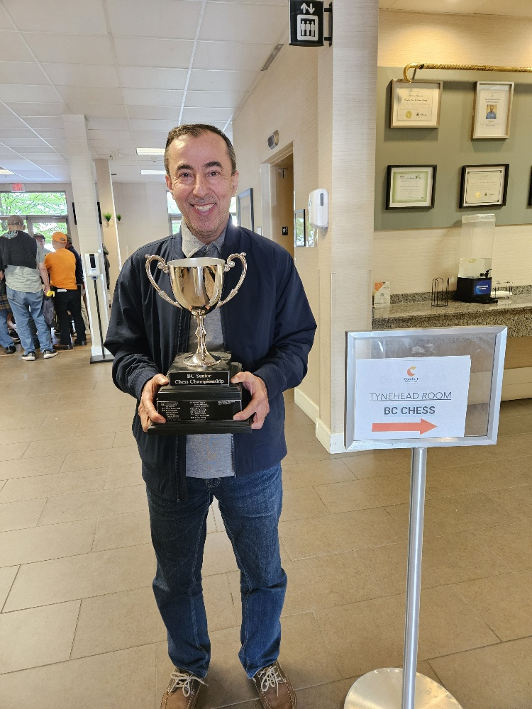

Track Record
Provincial senior champion in 2018, 2019, 2022, 2023, and 2026 the most decorated senior chess record in recent BC history.

Full Record
Arpak represented Iraq in the Junior International Chess Championship in 1982, showcasing his early talent on the international stage. Finishing in top 10
Arpak competed in the Arabic Chess Championship held in Yemen in 2001, demonstrating his skills against top players from the region. Winning the tournament in first place.
Arpak participated in the Canadian Senior Championship in 2018, where he managed to secure 2nd place in the tournament.
Arpak achieved a peak FIDE rating of 2296, earning him the title of Candidate Master.
Arpak participated in the Doha International Chess Tournament in Qatar in 1989, where he demonstrated his skills against a diverse field of competitors and finishing in top 5.
Arpak secured a memorable tie against the titled player Elmar Magerramov during an international tournament, showcasing his ability to compete at the highest levels.